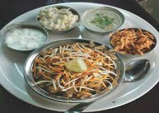
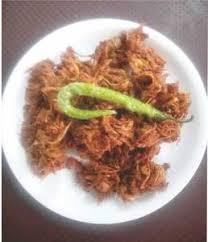
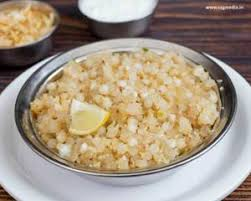

A haven for lovers of authentic Maharashtrian cuisine! Our extensive menu boasts a delightful array of traditional Maharashtrian dishes that are sure to tantalize your taste buds.
From flavorful thalipith and ukdiche modak to the comforting goodness of pohe and the familiar satisfaction of tea, we bring you the essence of Maharashtra on every plate.Not just limited to Maharashtrian classics, our menu also features tempting options like noodles and tava pulao.As a vegetarian-friendly establishment, we take pride in offering a diverse range of delectable dishes.
Situated in a cozy space, Puneri Katta ensures a warm and welcoming atmosphere. With ample parking available, finding a spot is a breeze, allowing you to relax and savor your culinary journey. The hospitality, while not overly premium, is reflective of the excellent value we provide for the cost of our food.
Give yourself the gift of a memorable dining experience. Join us at Puneri Katta, where tradition meets taste, and indulge in the rich flavors of Maharashtra.
At Puneri Katta, we take pride in being a culinary destination that goes beyond just satisfying hunger – we aim to create an experience that lingers in your memory. Our commitment to maintaining the authenticity of Maharashtrian cultural food sets us apart, ensuring that every bite is a journey through the rich culinary heritage of Maharashtra. Whether you are a long-time fan of Maharashtrian cuisine or a newcomer eager to explore, our restaurant offers a delightful fusion of flavors that will leave you craving more.
Our journey began with a vision to bring the essence of Maharashtra to every plate, and over the years, the testimonials from patrons like Sumit N, Jitendra K, and Farid S reinforce the success of that vision. Join us on this gastronomic adventure where passion, tradition, and flavor converge to create an unparalleled dining experience. Puneri Katta invites you to savor the taste of Maharashtra – a symphony of spices, textures, and aromas that will leave you coming back for more.
Services Section

Upasachi Misal
₹120.00

Kanda Bhaji
₹40.00

Khichadi
₹80.00
Contact Section
Address:Shop No 3, Maitreya Hub, SRPF Road, Jagtap Chowk, near Dock Hotel, Wanwadi, Pune, Maharashtra 411040.
Contact:9423003807